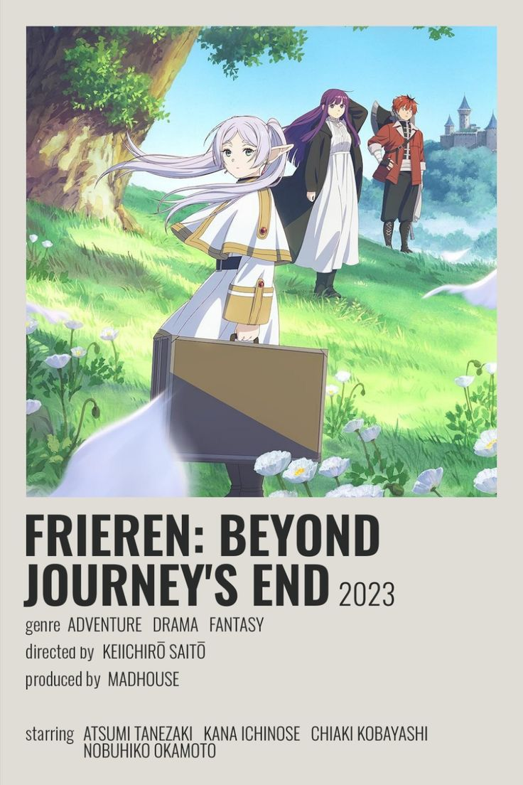
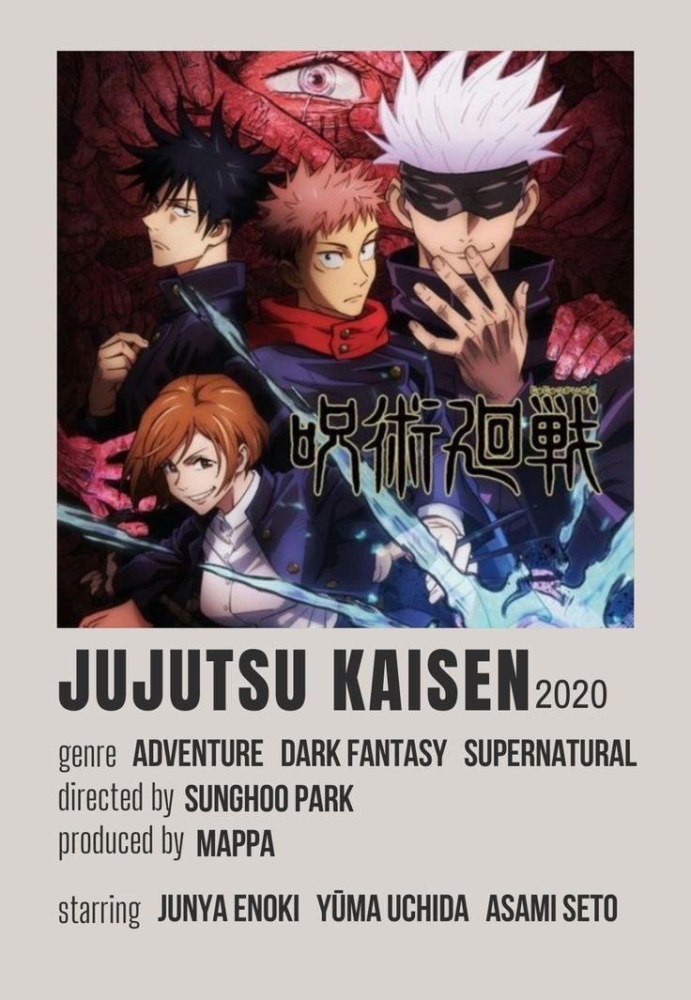
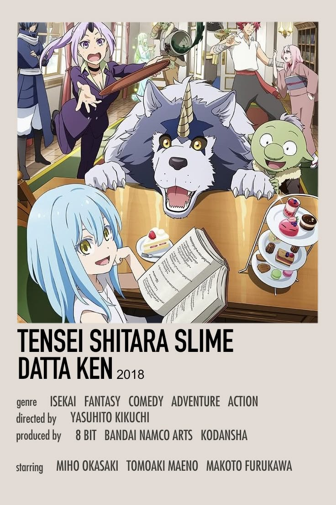

The adventure is over but life goes on for an elf mage just beginning to learn what living is all about. Elf mage Frieren and her courageous fellow adventurers have defeated the Demon King and brought peace to the land. With the great struggle over, they all go their separate ways to live a quiet life. But as an elf, Frieren, nearly immortal, will long outlive the rest of her former party. How will she come to terms with the mortality of her friends? How can she find fulfillment in her own life, and can she learn to understand what life means to the humans around her? Frieren begins a new journey to find the answer.
Find out more in: https://www.crunchyroll.com/pt-br/series/GG5H5XQX4/frieren-beyond-journeys-end

Jujutsu Kaisen (JJK) is a dark fantasy supernatural manga and anime series that follows Yuji Itadori, a high school student who accidentally becomes the host of a terrifyingly powerful demon named Ryomen Sukuna. To prevent his immediate execution, Yuji joins a secret society of sorcerers to locate and consume the rest of the demon's body parts.
Find out more in: https://www.crunchyroll.com/pt-br/series/GRDV0019R/jujutsu-kaisen

That Time I Got Reincarnated as a Slime (TenSura) is a fantasy isekai series where a murdered 37-year-old corporate worker is reborn in a magical world as a powerful slime. He sets out to build a utopian, harmonious nation for all monster races.
Find out more in: https://www.crunchyroll.com/pt-br/series/GMTE00256631/that-time-i-got-reincarnated-as-a-slime-the-movie-scarlet-bond
Do you want to start watching anime and don't know where to start?
Or...
Want to find a new anime but don't know what to watch?
Here is a list of different anime genres including three cool animes in that genre for you to give a try! ⁺˚*
"Kimi no Na Wa is the third highest-grossing anime film of all time!"
"The longest-running anime has more than 7,500 episodes"
"Spirited Away is the first anime film to be nominated for an Academy Award, and won!"
"Death Note is banned in China"
"The ramen shop ‘Ichiraku’ in Naruto exists"
"‘Haikyuu’ was created to make volleyball popular"